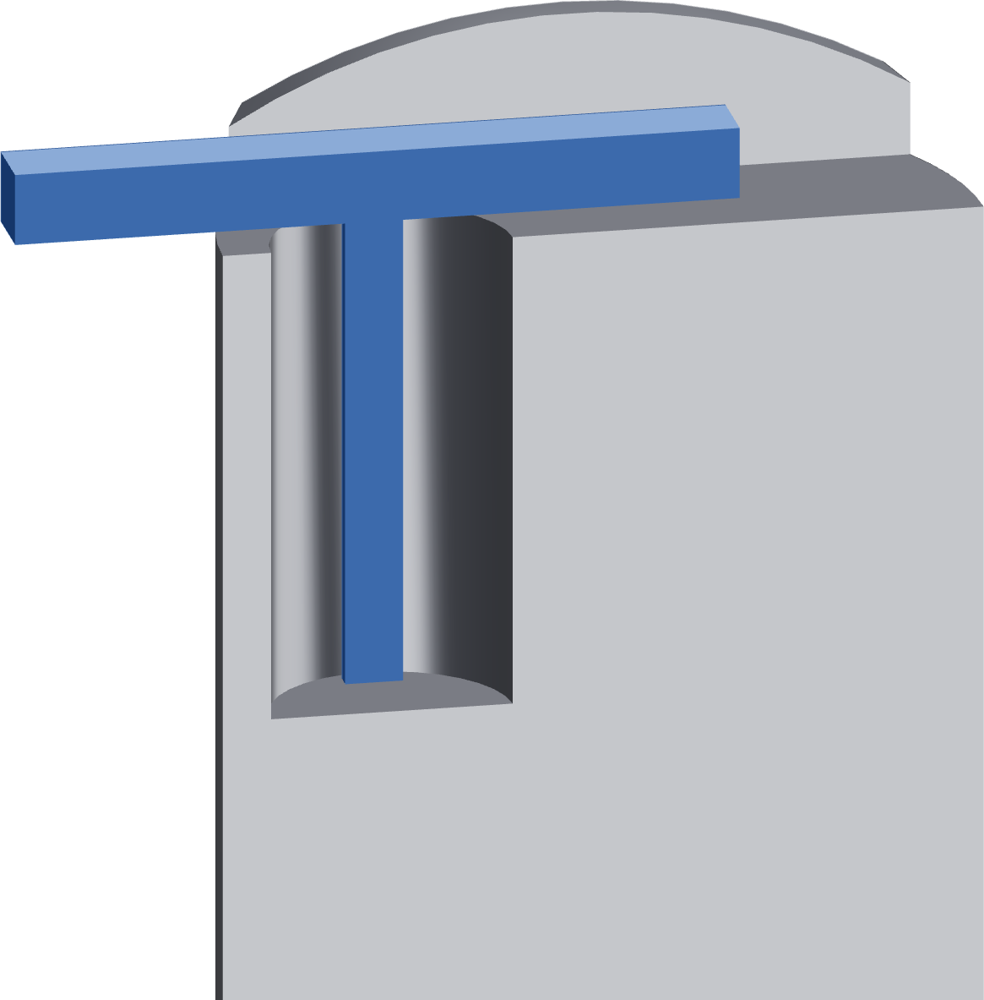

Measure the actual port depth
This reading sets where the tube grip sits. It allows the press to stop at the actual donor's seating depth without a prior manual full seating.

- Use the existing caliper's depth blade. Rest its reference beam on the port mouth below the raised arches, clear of the plunger. An arch-top reading adds the wrong height.
- Lower the blade gently beside the bore wall until it touches the annular seating floor that supports the thimble cap.
- Read and record the depth as D, in millimetres. Check at the opposite side of the annular floor to confirm the same datum.
- If the caliper cannot reach that datum, gently touch a clean 4 mm hex-key tip to the annular floor, mark the key at the port mouth, withdraw it and measure from the tip to the mark with the caliper.
Measure the cap seat
Keep the blade out of the central water opening and away from the valve plunger. The port's nominal 20 mm depth is not the fixture setup measurement.